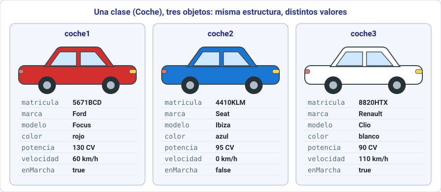

1. Clases¶
1.1. Pensar en objetos¶
Cuando programas de forma tradicional piensas en los pasos que debe seguir el programa: leer un dato, calcular, mostrar el resultado. La programación orientada a objetos (POO) cambia la pregunta: ¿qué cosas existen en el problema y cómo se relacionan entre sí?
Un programa orientado a objetos es una pequeña simulación de una parte de la realidad. Está formado por objetos que colaboran enviándose mensajes: cada objeto pide servicios a otros y ofrece los suyos. Cada objeto es una instancia de alguna clase, y las clases se organizan entre sí mediante relaciones, entre ellas la herencia. Esta es, en esencia, la definición clásica de Grady Booch.
El hilo conductor del curso: los vehículos
Todos los ejemplos de este curso giran en torno a una empresa de alquiler de vehículos. Empezaremos con un simple Coche y, capítulo a capítulo, iremos añadiendo camiones, conductores, alquileres y una flota completa.
1.2. Del mundo real a la simulación¶
Imagina un concesionario con varios coches aparcados. Cada uno es un elemento distinto del mundo real: tiene su matrícula, su marca, su color, y en este momento puede estar parado o circulando a cierta velocidad. Además, cada coche sabe hacer cosas: arrancar, acelerar, frenar.
Cualquier elemento del mundo real se puede describir con cuatro ideas. La POO traslada esa misma descripción al software:
| En el mundo real, un coche tiene... | En el programa, un objeto tiene... |
|---|---|
| Una identidad: es ese coche y no otro (su matrícula lo distingue) | Una identidad: es un objeto distinto de los demás |
| Unas características: marca, modelo, color, potencia | Unos datos, llamados atributos |
| Un estado en cada momento: parado, a 60 km/h | Los valores que tienen sus atributos en ese momento |
| Unos comportamientos: arrancar, acelerar, frenar | Unos procedimientos, llamados métodos |
Mira ahora tres coches concretos:

Los tres tienen exactamente los mismos atributos (matrícula, marca, modelo, color, potencia, velocidad y si están en marcha) y pueden hacer lo mismo (arrancar, acelerar, frenar). Lo que cambia es el valor de cada atributo: el Ford es rojo y va a 60 km/h, el Seat está parado, el Renault va a 110 km/h.
Esa estructura común, que comparten todos los coches, es lo que describe una clase. Cada coche concreto, con sus valores, es un objeto.
1.3. Qué es una clase¶
Una clase es una plantilla que describe objetos que van a tener la misma estructura (los mismos atributos) y el mismo comportamiento (los mismos métodos). En el mundo real agrupamos los elementos en categorías (cualquier coche pertenece a la categoría automóvil); en el programa, los objetos que comparten estructura y comportamiento se agrupan en clases.
Una clase tiene una doble naturaleza:
| Como... | Una clase es... |
|---|---|
| Módulo | Un mecanismo para organizar el software: encapsula en un mismo sitio los datos y las operaciones relacionados. |
| Tipo de dato | Un nuevo tipo que podemos usar para declarar variables, igual que int o double. Define los valores posibles y las operaciones aplicables. |
Un programa orientado a objetos es una colección estructurada de clases
Escribir un programa OO consiste, en gran medida, en definir clases y hacer que sus objetos colaboren.
Abstracción: quedarse con lo importante¶
Una clase no describe todo lo que es un coche: es un modelo simplificado que conserva solo lo que importa para el problema. A esta idea se la llama abstracción. El mismo elemento real se modela de forma distinta según el sistema:
| Sistema | El «coche» se describe con... |
|---|---|
| Concesionario | precio, stock, año de fabricación, equipamiento |
| Taller | matrícula, kilometraje, historial de averías |
| Tráfico (DGT) | matrícula, titular, fecha de la última ITV, multas |
| Nuestra empresa de alquiler | matrícula, marca, modelo, color, potencia, velocidad |
La pregunta de diseño
Antes de definir una clase pregúntate: ¿qué necesita saber y qué necesita hacer un objeto de esta clase para resolver mi problema? Todo lo demás sobra.
1.4. De qué se compone una clase¶
Los componentes de una clase se llaman miembros. Los dos tipos principales son los atributos y los métodos.
Atributos¶
Un atributo es un dato que guarda cada objeto de la clase. Determina la estructura de almacenamiento de los objetos y todo lo que un objeto «sabe» se expresa mediante sus atributos. Cada atributo tiene un nombre y un tipo.
| Atributo | Tipo | Ejemplo de valor |
|---|---|---|
matricula |
texto (String) |
"5671BCD" |
marca |
texto (String) |
"Ford" |
modelo |
texto (String) |
"Focus" |
color |
texto (String) |
"rojo" |
potencia |
entero (int) |
130 (CV) |
velocidad |
entero (int) |
60 (km/h) |
enMarcha |
lógico (boolean) |
true |
El conjunto de valores de los atributos de un objeto en un instante dado es su estado.
Métodos¶
Un método es una operación que pueden realizar los objetos de la clase. Todo lo que un objeto «puede hacer» se expresa mediante sus métodos. Los métodos son, además, la única vía para consultar y modificar los atributos desde fuera del objeto. Un método tiene un nombre, unos parámetros (los datos que necesita) y un resultado (lo que devuelve, o nada).
| Método | Parámetros | Qué hace |
|---|---|---|
ponerEnMarcha() |
ninguno | Arranca el coche |
acelerar(incremento) |
un entero | Aumenta la velocidad |
frenar(decremento) |
un entero | Reduce la velocidad |
getVelocidad() |
ninguno | Devuelve la velocidad actual |
pintar(color) |
un texto | Cambia el color del coche |
Tipos de métodos¶
No todos los métodos cumplen el mismo papel. En una clase encontrarás habitualmente estos tipos:
| Tipo | Para qué sirve | Ejemplo en Coche |
|---|---|---|
| Constructor | Crea el objeto y lo deja en un estado inicial válido | Coche(matricula, marca, ...) |
| De consulta (getter) | Devuelve el valor de un atributo sin modificarlo | getVelocidad(), getColor() |
| De modificación (setter) | Cambia el valor de un atributo | pintar(color) |
| De comportamiento | Realiza una acción propia del objeto y suele cambiar su estado | ponerEnMarcha(), acelerar(...), frenar(...) |
| Auxiliar (privado) | Utilidad interna que usan otros métodos; no se ofrece al exterior | (los verás en el capítulo 3) |
De clase (static) |
Pertenece a la clase y no a un objeto concreto | getTotalCoches() |
| Redefinido | Sustituye un método que todas las clases heredan | toString() |
1.5. La clase Coche en Java¶
La clase es la unidad fundamental de programación en Java. Define la interfaz (lo que ofrece) y la implementación (cómo lo hace) de sus objetos, y todo objeto es instancia de alguna clase.
public class NombreClase {
// atributos
// constructores
// métodos
}
Reglas básicas
- Una clase
publicdebe estar en un archivo con su mismo nombre (CocheenCoche.java). - Por convención, los nombres de clase empiezan por mayúscula (
Coche,Vehiculo) y los de atributos y métodos por minúscula (velocidad,acelerar). - Java no admite variables ni métodos «sueltos»: todo está dentro de alguna clase.
Atributos en Java¶
La sintaxis básica para declarar un atributo es:
[final] [static] acceso tipo nombre;
private String marca;
private int potencia;
private final String matricula; // constante: no cambia tras crearse
private static int totalCoches = 0; // compartido por todos los coches
accesoindica quién puede ver el atributo (public,private,protectedo ninguno). Lo estudiaremos en el capítulo 3; por ahora usaprivate.finalsignifica que el valor no se puede modificar después de asignarlo.staticsignifica que el atributo es de la clase y lo comparten todos sus objetos.
Valores por defecto. Java da un valor inicial a los atributos que no inicializas explícitamente, según su tipo:
| Tipo del atributo | Valor inicial |
|---|---|
boolean |
false |
char |
'\u0000' (carácter nulo) |
byte, short, int, long |
0 |
float, double |
0.0 |
Referencia a un objeto (String, Coche...) |
null |
Las variables locales no tienen valor por defecto
Las variables declaradas dentro de un método o constructor deben recibir un valor antes de usarse; si no, el programa no compila.
int x;
System.out.println(x); // error: variable x might not have been initialized
Métodos en Java¶
La sintaxis básica para declarar un método es:
[final] [static] [abstract] acceso tipo nombre(parámetros) { ... }
tipoes el tipo de retorno: un tipo primitivo, una clase, un array ovoidsi no devuelve nada.parámetroses una lista de cero o más elementos con la formatipo nombre, separados por comas.- Todo método que no sea
voiddebe terminar con unreturnseguido de una expresión del tipo de retorno.
public int getVelocidad() { // devuelve un entero
return velocidad;
}
public void acelerar(int incremento) { // no devuelve nada
velocidad = velocidad + incremento;
}
Sobrecarga. Una clase puede tener varios métodos con el mismo nombre si difieren en el número, el tipo o el orden de sus parámetros. El compilador elige el que corresponde a los argumentos con que se invoca. Por ejemplo, frenar(int) reduce la velocidad en una cantidad y frenar() detiene el coche del todo.
El tipo de retorno no basta
Dos métodos que solo se diferencian en el tipo de retorno no son una sobrecarga válida: el compilador no podría decidir cuál usar.
Constructores y this¶
Un constructor se ejecuta al crear un objeto y lo deja en un estado inicial válido. Se reconoce porque se llama exactamente igual que la clase y no tiene tipo de retorno (ni siquiera void).
Dentro de los métodos no estáticos y de los constructores, this es una referencia al propio objeto. Sirve sobre todo para distinguir un atributo de un parámetro con el mismo nombre:
public Coche(String matricula, String marca, String modelo, String color, int potencia) {
this.matricula = matricula; // atributo = parámetro
this.marca = marca;
// ...
}
Sin this, matricula = matricula; asignaría el parámetro a sí mismo y el atributo no cambiaría.
Constructor por defecto
Si no escribes ningún constructor, el compilador genera uno sin parámetros que deja los atributos con sus valores por defecto. En cuanto escribes alguno, ese constructor automático deja de existir. Una clase puede tener varios constructores (sobrecarga).
Miembros de clase (static)¶
Normalmente cada objeto tiene su propia copia de cada atributo. Si queremos un valor compartido por todos los objetos de la clase, como el número de coches creados, usamos static. Los atributos estáticos pertenecen a la clase y se manejan con métodos estáticos, que se invocan con el nombre de la clase: Coche.getTotalCoches().
Un método estático solo accede a miembros estáticos
Un método static no pertenece a ningún objeto en concreto, así que no puede usar this ni acceder a atributos de objeto.
La clase completa¶
Reunamos todo en la clase Coche. Cada bloque de código está marcado con el tipo de miembro que contiene:
// Coche.java
public class Coche {
// ----- Atributo de clase (compartido por todos los coches) -----
private static int totalCoches = 0;
// ----- Atributos de objeto -----
private final String matricula;
private String marca;
private String modelo;
private String color;
private int potencia; // en CV
private int velocidad; // en km/h
private boolean enMarcha;
// ----- Constructor -----
public Coche(String matricula, String marca, String modelo, String color, int potencia) {
this.matricula = matricula;
this.marca = marca;
this.modelo = modelo;
this.color = color;
this.potencia = potencia;
this.velocidad = 0;
this.enMarcha = false;
totalCoches++;
}
// ----- Métodos de comportamiento -----
public void ponerEnMarcha() {
enMarcha = true;
}
public void parar() {
velocidad = 0;
enMarcha = false;
}
public void acelerar(int incremento) {
velocidad = velocidad + incremento;
}
public void frenar(int decremento) {
velocidad = Math.max(0, velocidad - decremento);
}
public void frenar() { // sobrecarga: frena del todo
velocidad = 0;
}
// ----- Métodos de consulta (getters) -----
public String getMatricula() {
return matricula;
}
public String getMarca() {
return marca;
}
public String getModelo() {
return modelo;
}
public String getColor() {
return color;
}
public int getPotencia() {
return potencia;
}
public int getVelocidad() {
return velocidad;
}
public boolean isEnMarcha() {
return enMarcha;
}
// ----- Método de modificación -----
public void pintar(String color) {
this.color = color;
}
// ----- Método de clase -----
public static int getTotalCoches() {
return totalCoches;
}
// ----- Método redefinido -----
@Override
public String toString() {
return "Coche{matricula=" + matricula + ", marca=" + marca + ", modelo=" + modelo
+ ", color=" + color + ", potencia=" + potencia + " CV"
+ ", velocidad=" + velocidad + " km/h, enMarcha=" + enMarcha + "}";
}
}
toString() y @Override
toString() devuelve una representación en texto del objeto. Todas las clases lo tienen aunque no lo escribas, pero la versión por defecto no es útil; aquí la redefinimos. @Override le indica al compilador que estamos sustituyendo un método heredado. Entenderás el porqué en el capítulo 4.
En UML
Una clase se dibuja como un rectángulo con tres compartimentos: nombre, atributos y operaciones. Los atributos y operaciones van precedidos de un símbolo de visibilidad: - privado, + público.
classDiagram
class Coche {
-String matricula
-String marca
-String modelo
-String color
-int potencia
-int velocidad
-boolean enMarcha
+Coche(String matricula, String marca, String modelo, String color, int potencia)
+ponerEnMarcha() void
+parar() void
+acelerar(int incremento) void
+frenar(int decremento) void
+getVelocidad() int
+pintar(String color) void
}Resumen del capítulo¶
- Una clase es la plantilla de unos objetos: define su estructura (atributos) y su comportamiento (métodos). Es a la vez módulo y tipo de dato.
- La abstracción consiste en modelar solo lo relevante del problema.
- Los atributos son los datos («lo que sabe»); los métodos son las operaciones («lo que puede hacer»).
- Hay varios tipos de métodos: constructores, de consulta, de modificación, de comportamiento, auxiliares, de clase y redefinidos.
- En Java,
thises el propio objeto ystaticcrea miembros de la clase, compartidos por todos los objetos.
Actividades¶
Actividad 1. Para un sistema de gestión de un taller, describe la clase Moto: propón al menos cinco atributos y cuatro métodos, e indica de qué tipo es cada método (consulta, comportamiento...).
Solución orientativa
- Atributos:
matricula,marca,modelo,cilindrada,kilometraje. - Métodos:
Moto(...)(constructor),getKilometraje()(consulta),registrarRecorrido(km)(comportamiento),cambiarAceite()(comportamiento).
Otras respuestas son válidas si responden a la pregunta de diseño: ¿qué necesita saber y hacer una moto en este sistema?
Actividad 2. El «coche» aparece en una aseguradora y en una empresa de alquiler. Indica dos atributos relevantes en ambos sistemas y dos que solo lo sean en uno de ellos.
Solución orientativa
- En ambos:
matricula,marca(tambiénmodelo). - Solo en la aseguradora:
valorAsegurado,historialSiniestros. - Solo en el alquiler:
precioPorDia,disponible.
Es la abstracción en acción: el mismo elemento real, modelos distintos.
Actividad 3. Escribe la clase Bicicleta con los atributos marca y marchas, un constructor con los dos, un método getMarchas() y un método toString().
Solución
// Bicicleta.java
public class Bicicleta {
private String marca;
private int marchas;
public Bicicleta(String marca, int marchas) {
this.marca = marca;
this.marchas = marchas;
}
public int getMarchas() {
return marchas;
}
@Override
public String toString() {
return "Bicicleta{marca=" + marca + ", marchas=" + marchas + "}";
}
}